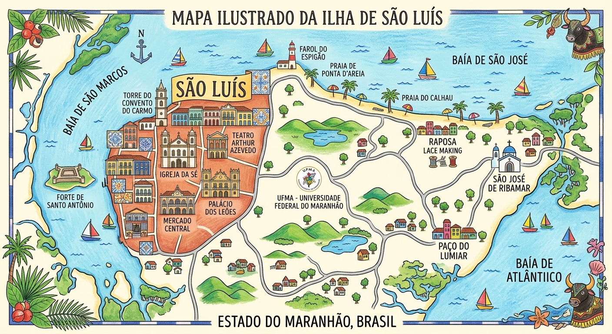

★
Mapa Digital — Mulheres Maranhenses
Mapeando a história, a cultura e o protagonismo feminino na Ilha de São Luís
🌙
Modo Escuro
15
Históricas
20
Na Cultura
15
Contemporâneas
Filtrar por Categoria
Todas as Mulheres (50)
1º Nível — Mulheres Históricas
2º Nível — Mulheres na Cultura
3º Nível — Mulheres Contemporâneas

×
Área de Atuação
O Impacto
Categoria e Subcategoria
Local de Representação em São Luís
Breve Biografia